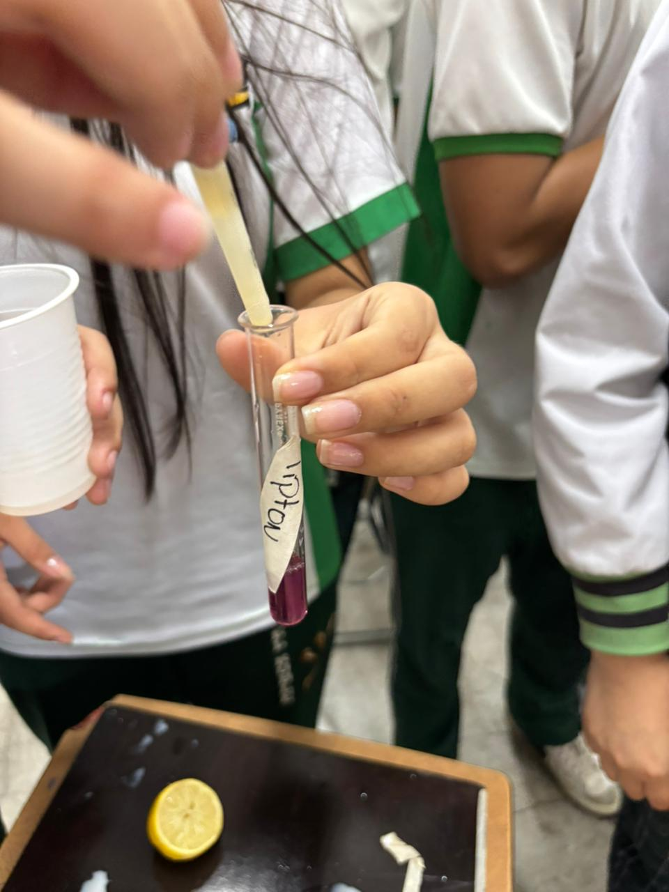
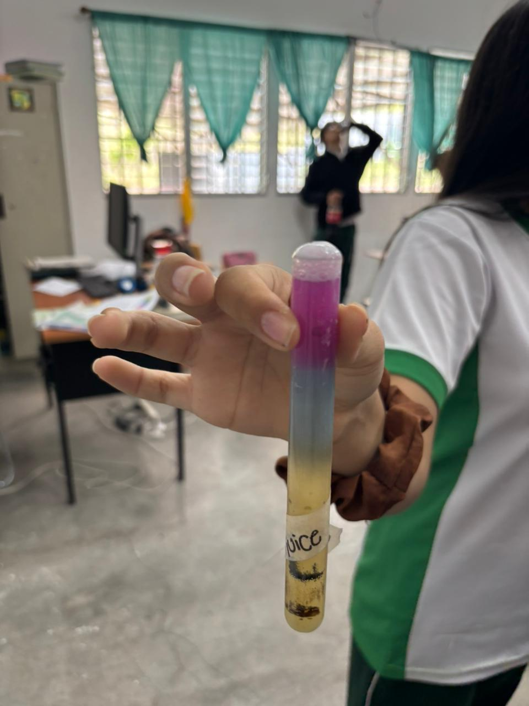
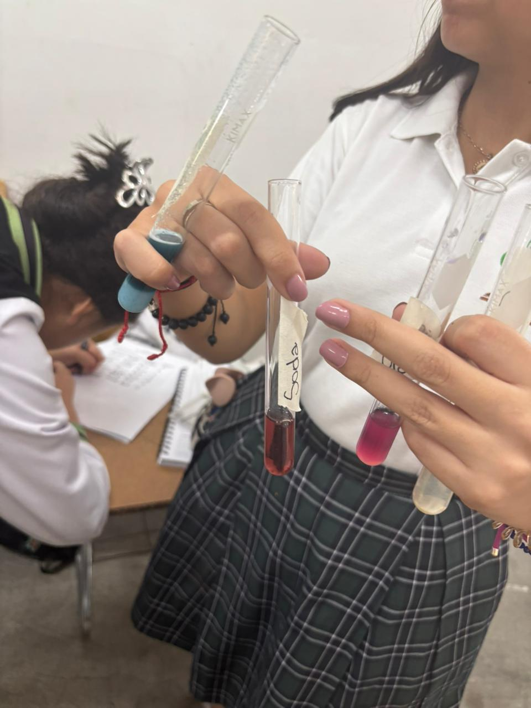
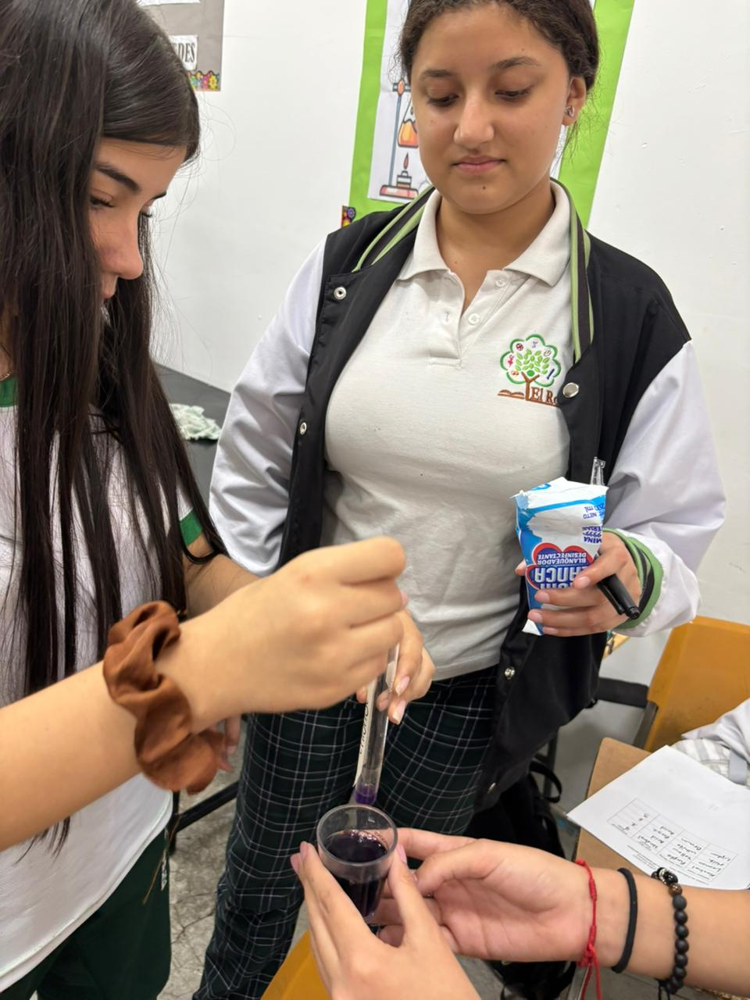

El Roble Academy
Chemistry Lab
By Abigahil Lozano
Results



Conclusion
The pH scale helps us understand if something is an acid, a base, or neutral. It goes from 0 to 14. If the pH is less than 7,
it's an acid. If it's 7, it's neutral (like pure water). If it's more than 7, it's a base. The pH scale is important in science,
farming, medicine, and everyday life. It helps us keep things safe, healthy, and working the way they should.
